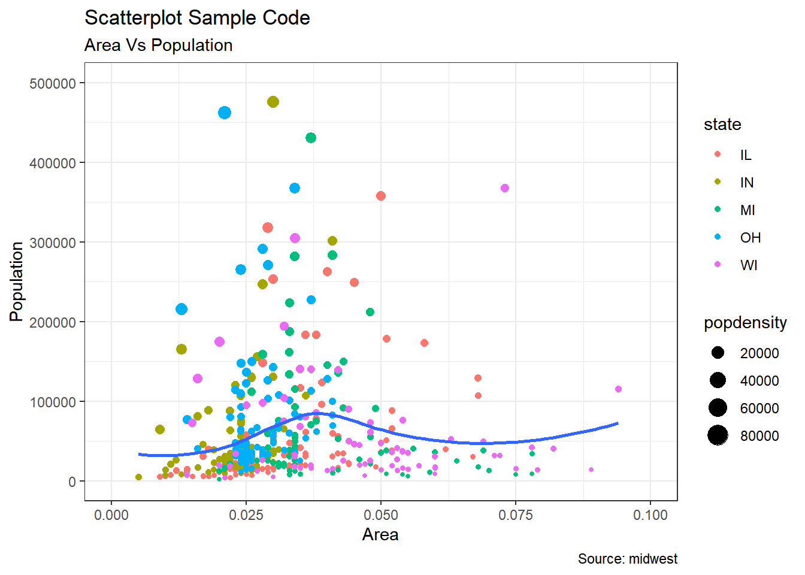

# install.packages("ggplot2")
# load package and data
options(scipen=999) # turn-off scientific notation like 1e+48
library(ggplot2)
theme_set(theme_bw()) # pre-set the bw theme.
data("midwest", package = "ggplot2")
# midwest <- read.csv("http://goo.gl/G1K41K") # bkup data source
# Scatterplot
gg <- ggplot(midwest, aes(x=area, y=poptotal)) +
geom_point(aes(col=state, size=popdensity)) +
geom_smooth(method="loess", se=F) +
xlim(c(0, 0.1)) +
ylim(c(0, 500000)) +
labs(subtitle="Area Vs Population",
y="Population",
x="Area",
title="Scatterplot Sample Code",
caption = "Source: midwest")
plot(gg)`geom_smooth()` using formula 'y ~ x'Warning: Removed 15 rows containing non-finite values (stat_smooth).Warning: Removed 15 rows containing missing values (geom_point).